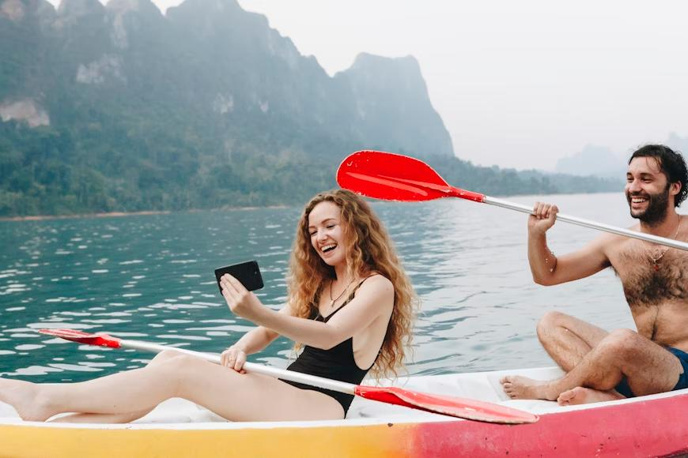

Our Mission
We believe adventure connects people! Our goal is to bring thrill-seekers closer to nature with safe, unforgettable white water experiences.
We believe adventure connects people! Our goal is to bring thrill-seekers closer to nature with safe, unforgettable white water experiences.
Founded in 2010 by a team of river enthusiasts, White Water Rafting Adventures has guided thousands down some of the most scenic and exciting rivers in the world. Our passion for safety, teamwork, and nature keeps every trip exciting and unique.